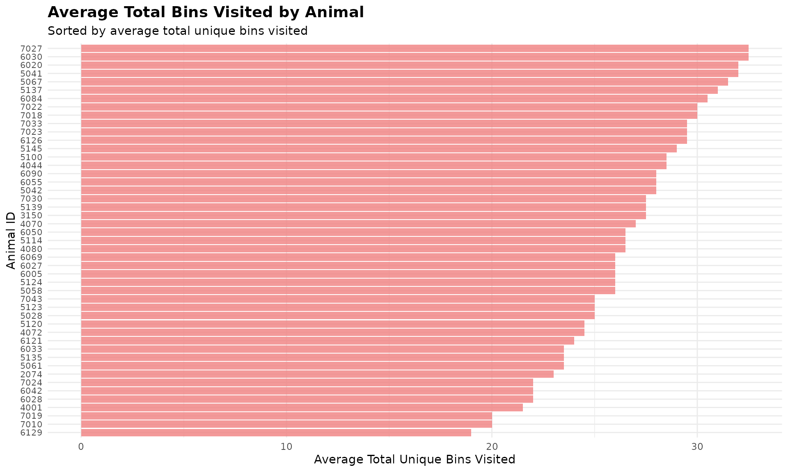

1. 🚨 Important: Set Your Global Variables First
Before analyzing bin visit patterns, configure global variables to match your data structure:
# Configure global variables for your data structure
set_global_cols(
# Time zone
tz = "America/Vancouver",
# Column names in your data files
id_col = "cow",
trans_col = "transponder",
start_col = "start",
end_col = "end",
bin_col = "bin",
dur_col = "duration",
intake_col = "intake",
start_weight_col = "start_weight",
end_weight_col = "end_weight",
# Bin settings
bins_feed = 1:30,
bins_wat = 1:5,
bin_offset = 100
)2. Introduction to Bin Visit Analysis
🦦 Ollie the Otter, our in-house data scientist, explains: “Animals exhibit distinct exploration behaviours when accessing feeding and drinking stations. Some individuals visit many different bins while others consistently use only a few preferred locations. This behavior reveals individual personalities and resource utilization strategies.”
3. Prerequisites
This tutorial assumes completion of previous data processing steps in Tutorial 1: Data Cleaning
4. Data Preparation
# Load cleaned example data
data(clean_feed)
data(clean_water)
# If you're using your own data from previous tutorials, use this instead:
# clean_feed <- your_cleaned_feed_data # From your cleaning results
# clean_water <- your_cleaned_water_data # From your cleaning results
# Quick peek at our data structure
cat("Feed data structure:\n")
#> Feed data structure:
head(clean_feed[[1]], 3) # First day, first 3 rows
#> # A tibble: 3 × 11
#> transponder cow bin start end duration
#> <int> <int> <dbl> <dttm> <dttm> <dbl>
#> 1 12448407 6020 1 2020-10-31 00:26:12 2020-10-31 00:27:36 84
#> 2 11954014 4044 1 2020-10-31 01:17:43 2020-10-31 01:22:13 270
#> 3 11954042 4072 1 2020-10-31 01:37:30 2020-10-31 01:37:52 22
#> # ℹ 5 more variables: start_weight <dbl>, end_weight <dbl>, intake <dbl>,
#> # date <date>, rate <dbl>
cat("\nWater data structure:\n")
#>
#> Water data structure:
head(clean_water[[1]], 3) # First day, first 3 rows
#> # A tibble: 3 × 11
#> transponder cow bin start end duration
#> <int> <int> <dbl> <dttm> <dttm> <dbl>
#> 1 12200060 5114 101 2020-10-31 00:14:13 2020-10-31 00:15:03 50
#> 2 12706618 7027 101 2020-10-31 00:29:34 2020-10-31 00:30:43 69
#> 3 12200004 5058 101 2020-10-31 01:18:23 2020-10-31 01:19:10 47
#> # ℹ 5 more variables: start_weight <dbl>, end_weight <dbl>, intake <dbl>,
#> # date <date>, rate <dbl>
cat("\nTotal days of data:\n")
#>
#> Total days of data:
cat("Feed days:", length(clean_feed), "\n")
#> Feed days: 2
cat("Water days:", length(clean_water), "\n")
#> Water days: 25. Exploratory Behavior Analysis
Individual animals differ in their willingness to explore different feeding and drinking stations. This analysis quantifies exploration patterns by counting unique bin visits per animal per day.
Calculate Unique Bin Visits
# Calculate unique bin visits for each animal across all days
bin_visits <- unique_bin_visits(
feed = clean_feed, # Our cleaned feed data
water = clean_water, # Our cleaned water data
return_list = FALSE) # 🎯 Try changing to TRUE for day-by-day!
# Look at the results
head(bin_visits)
#> # A tibble: 6 × 5
#> date cow unique_feed_bins_vis…¹ unique_water_bins_vi…² total_bins_visited
#> <chr> <int> <int> <int> <int>
#> 1 2020-1… 2074 20 4 24
#> 2 2020-1… 3150 22 4 26
#> 3 2020-1… 4001 19 3 22
#> 4 2020-1… 4044 25 4 29
#> 5 2020-1… 4070 24 4 28
#> 6 2020-1… 4072 24 3 27
#> # ℹ abbreviated names: ¹unique_feed_bins_visited, ²unique_water_bins_visitedThis analysis provides three key metrics for each animal on each day:
- How many different feed bins they visited
-
How many different water bins they
visited
- The total number of unique bins visited (feed + water)
6. Identifying Exploration Patterns
Most Exploratory Animals
# Calculate average unique bin visits per animal
avg_bin_visits <- bin_visits |>
dplyr::group_by(cow) |>
dplyr::summarize(
avg_feed_bins = mean(unique_feed_bins_visited),
avg_water_bins = mean(unique_water_bins_visited),
avg_total_bins = mean(total_bins_visited),
days_observed = dplyr::n(),
.groups = "drop"
) |>
dplyr::arrange(dplyr::desc(avg_total_bins))
# Display most exploratory animals
cat("🏆 TOP 5 MOST EXPLORATORY ANIMALS:\n")
#> 🏆 TOP 5 MOST EXPLORATORY ANIMALS:
head(avg_bin_visits, 5)
#> # A tibble: 5 × 5
#> cow avg_feed_bins avg_water_bins avg_total_bins days_observed
#> <int> <dbl> <dbl> <dbl> <int>
#> 1 6030 28 4.5 32.5 2
#> 2 7027 29 3.5 32.5 2
#> 3 5041 28 4 32 2
#> 4 6020 28 4 32 2
#> 5 5067 28.5 3 31.5 2
cat("\n🏠 TOP 5 CREATURES OF HABIT (fewest bins visited):\n")
#>
#> 🏠 TOP 5 CREATURES OF HABIT (fewest bins visited):
tail(avg_bin_visits, 5)
#> # A tibble: 5 × 5
#> cow avg_feed_bins avg_water_bins avg_total_bins days_observed
#> <int> <dbl> <dbl> <dbl> <int>
#> 1 7024 19 3 22 2
#> 2 4001 18.5 3 21.5 2
#> 3 7010 16 4 20 2
#> 4 7019 16.5 3.5 20 2
#> 5 6129 17 2 19 2This analysis reveals clear individual differences in exploration behavior. Most exploratory animals visit many different stations, while creatures of habit consistently use fewer preferred locations.
Visualize Exploration Patterns
# Visualize top 50 most exploratory animals
top_50_explorers <- head(avg_bin_visits, 50)
ggplot(top_50_explorers, aes(x = reorder(cow, avg_total_bins), y = avg_total_bins)) +
geom_bar(stat = "identity", fill = "lightcoral", alpha = 0.8) +
coord_flip() +
labs(
title = "Average Total Bins Visited by Animal",
subtitle = "Sorted by average total unique bins visited",
x = "Animal ID",
y = "Average Total Unique Bins Visited"
) +
theme_minimal() +
theme(
axis.text.y = element_text(size = 8),
plot.title = element_text(size = 14, face = "bold"),
plot.subtitle = element_text(size = 11)
)
7. Code Cheatsheet
#' Copy and modify these code blocks for your own analysis!
# ---- SETUP: Global Variables (REQUIRED FIRST!) ----
library(moo4feed)
library(ggplot2)
library(dplyr)
# Set up your column names and timezone (modify these!)
set_global_cols(
# Time zone
tz = "America/Vancouver",
# Column names in your data files
id_col = "cow",
trans_col = "transponder",
start_col = "start",
end_col = "end",
bin_col = "bin",
dur_col = "duration",
intake_col = "intake",
start_weight_col = "start_weight",
end_weight_col = "end_weight",
# Bin settings
bins_feed = 1:30,
bins_wat = 1:5,
bin_offset = 100
)
# ---- STEP 1: Load Your Data ----
# Load your cleaned data
data(clean_feed)
data(clean_water)
# Or use your own cleaned data from previous tutorials:
# clean_feed <- your_cleaned_feed_data
# clean_water <- your_cleaned_water_data
# ---- STEP 2: Calculate Unique Bin Visits ----
# Get overall summary across all days
bin_visits <- unique_bin_visits(
feed = clean_feed, # Your cleaned feed data
water = clean_water, # Your cleaned water data
return_list = FALSE # FALSE = combined summary, TRUE = day-by-day
)
# View results
head(bin_visits)
# ---- STEP 3: Identify Most/Least Exploratory Animals ----
# Calculate averages per animal
avg_bin_visits <- bin_visits |>
dplyr::group_by(cow) |>
dplyr::summarize(
avg_feed_bins = mean(unique_feed_bins_visited),
avg_water_bins = mean(unique_water_bins_visited),
avg_total_bins = mean(total_bins_visited),
days_observed = dplyr::n(),
.groups = "drop"
) |>
dplyr::arrange(dplyr::desc(avg_total_bins)) # Most exploratory first
# Get top and bottom explorers
top_explorers <- head(avg_bin_visits, 10) # Most exploratory
creatures_of_habit <- tail(avg_bin_visits, 10) # Least exploratory
print(top_explorers)
print(creatures_of_habit)
# ---- STEP 4: Visualize Results ----
# Top exploratory animals bar plot
top_50_explorers <- head(avg_bin_visits, 50)
ggplot(top_50_explorers, aes(x = reorder(cow, avg_total_bins), y = avg_total_bins)) +
geom_bar(stat = "identity", fill = "lightcoral", alpha = 0.8) +
coord_flip() +
labs(
title = "Average Total Bins Visited by Animal",
subtitle = "Sorted by average total unique bins visited",
x = "Animal ID",
y = "Average Total Unique Bins Visited"
) +
theme_minimal() +
theme(
axis.text.y = element_text(size = 8),
plot.title = element_text(size = 14, face = "bold"),
plot.subtitle = element_text(size = 11)
)